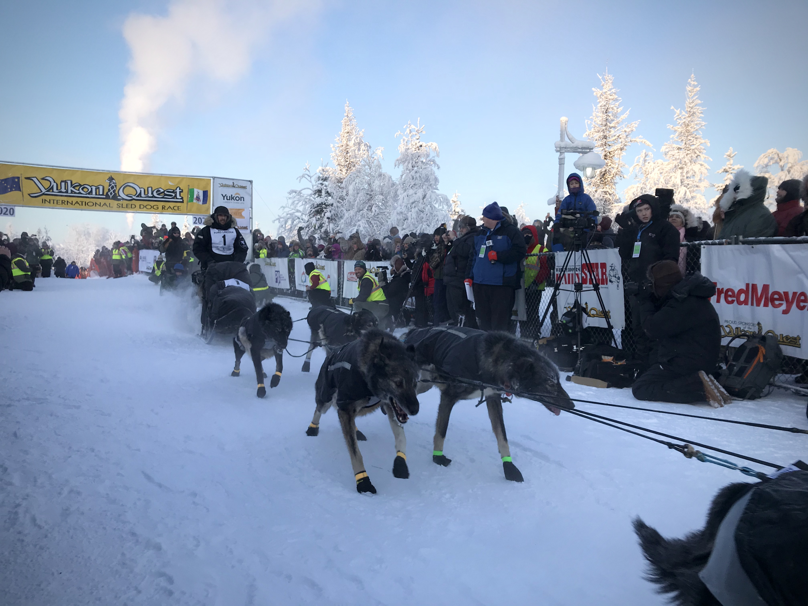

And they're off! 2020 Yukon Quest gets underway in Fairbanks
By Laura Stickells | February 1, 2020
Richie Beattie was the first musher to leave Fairbanks and begin the journey to Whitehorse, Yukon. Photo by Laura Stickells
FAIRBANKS, ALASKA — Richie Beattie and his team of 14 dogs led the group of 15 mushers attempting the 37th running of the Yukon Quest 1,000 Mile International Sled Dog Race out of Fairbanks this morning, beginning the journey to Whitehorse, Yukon.
Every three minutes a new team would arrive under the yellow start banner stationed behind the Morris Thompson Cultural and Visitors Center, and the hundreds of spectators lining the chute would yell final well-wishes.
Each racer walked up and down the team's gang line, giving the dogs some final pets and head rubs, before the 30-second countdown would cue the musher back to the sled for the launch down the trail.
“I feel good, excited to get moving,” Beattie, 46, said an hour before the Quest’s countdown clock hit zero.
He had to speak loudly to be heard over his dog team, which definitely earned the unofficial title of loudest group in the staging area.
“It’s funny because at home they’re not loud at all, but when they get in settings like this, they get kind of intimidated,” the Two Rivers musher said. “They knew when I went outside to feed this morning that something was up, probably because I was running around like a mad man until 4 a.m. getting everything dialed in to be here.”
The team of fellow Two Rivers musher Chase Tingle, stationed near the back of the staging area, proved quite the opposite of Beattie’s group.
Tingle's team lay curled up quietly in their boxes in the truck bed. If the vehicle had been parked anywhere but the parking lot filled with over 200 dogs, a passerby might not have noticed that 14 dogs were snuggled up in the back.
“They know this routine, so they’re sleeping up and resting and getting ready to go,” Tingle said.
Tingle, 36, is making his second Quest start. He finished last year’s race in 12 days, 6 hours and 56 minutes. He’s also completed three YQ300s — a 300-mile race that follows the Quest’s trail from Fairbanks to Circle.
Like Beattie, Tingle was excited to get out on the trail. The first day is one of his favorites, and he was already looking forward to making a stop at the “Trailgate” hosted by 24 Mile Java and Treats off Chena Hot Springs Road.
“All the way out until Two Rivers there’s people out having a good time. There’s campfires the whole way and people out handing you food and snacks,” he said.
Despite his team’s quiet demeanor earlier in the morning, when it lined up under the start banner the dogs were as fired up as the 13 teams that started before them. Each dog pulled at its harness and howled, ready to hit the trail.
Defending Quest champion Brent Sass, 40, of Eureka was the last musher to head out. His plan for the first day, which was echoed by all of the other mushers, was to take it slow and get warmed up.
“I’ve got a real heavy load in the sled to make sure we aren’t going too fast. Injuries happen when you go too fast,” he said.
“I’m sure we’ll pass some people right away, but my goal isn’t to go out and pass everyone ... The goal is to go out and run my dog team and make sure that I’m focusing on them.”
Each musher had dogs sporting matching jackets to help keep them warm in the 20-below-zero temperature. Yukon musher Michelle Phillips, who started 11th, also had her dogs wearing matching highlighter yellow bandanas.
But even with the cold temperatures, many of the dogs bit at the snow to get a little last-minute hydration before beginning the 1,000- mile journey.
The teams are now headed to Two Rivers, the first of nine checkpoints located 73 miles into the race. Although the checkpoint is named Two Rivers, it's about 30 miles farther down Chena Hot Springs Road from the small community.
Each musher’s start differential will be subtracted from their initial four-hour mandatory layover, which they can either take at either the Mile 101 or Central checkpoint.